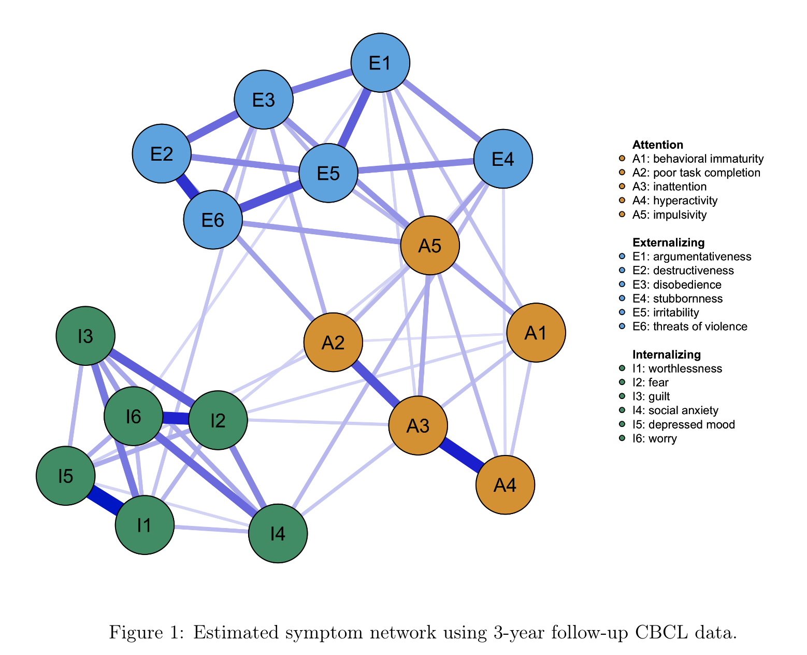
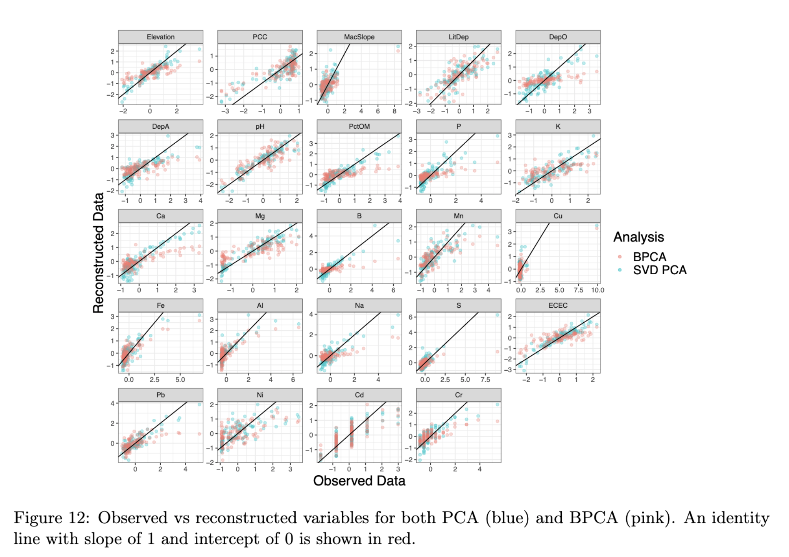
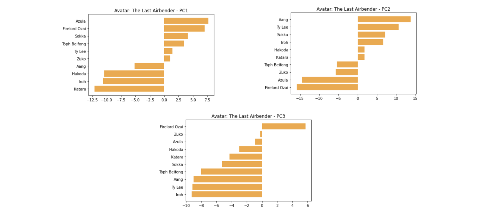
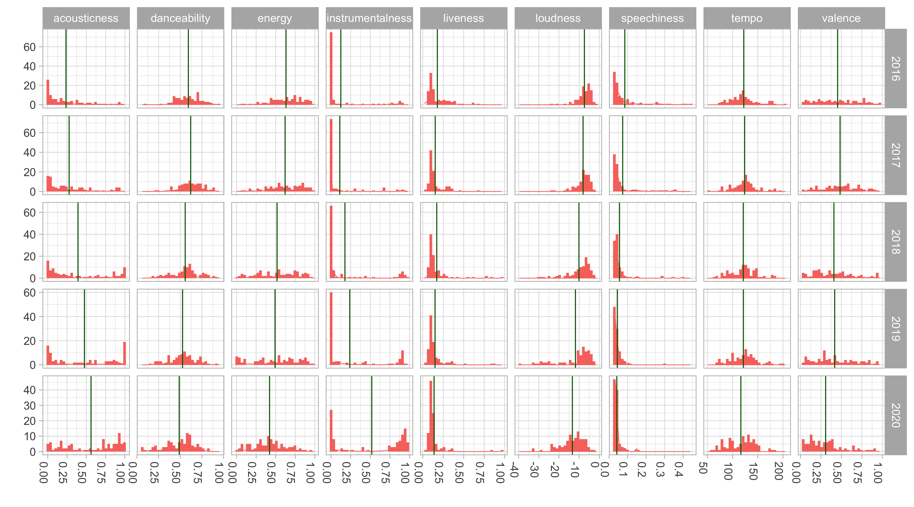
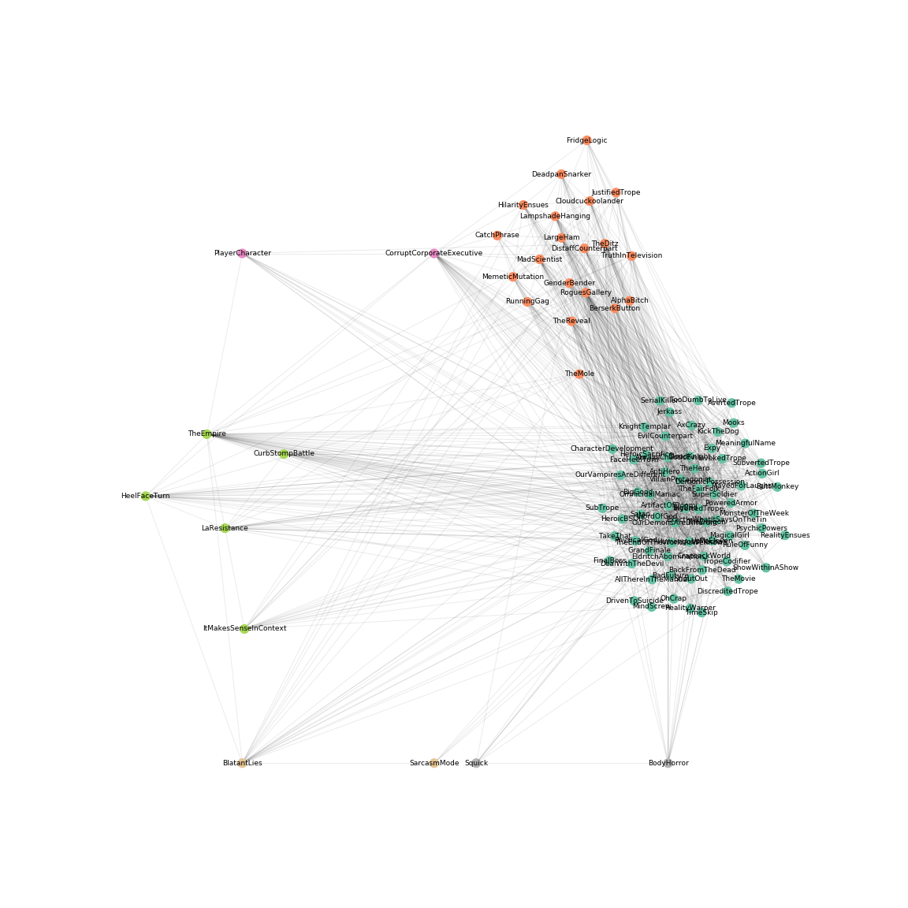
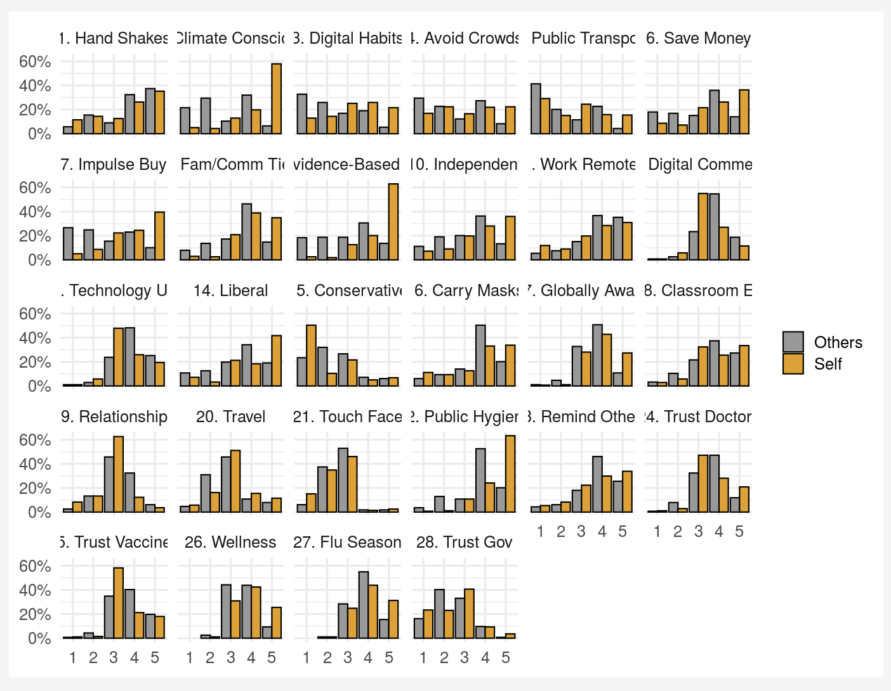
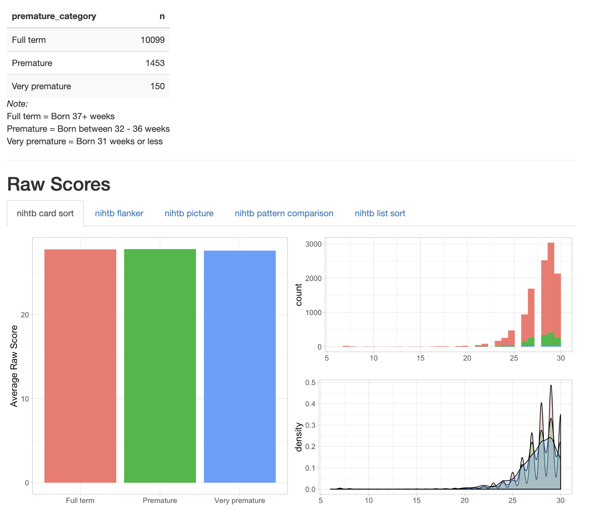

This is a brief project where I look at mental health symptom networks in a large sample of youth…

Exploring Bayesian PCA on two datasets.

More TV Tropes.

A quick analysis of how my music listening has changed on Spotify.

Web scraping, TV Tropes, network analysis.

The Life After project is a survey of beliefs about what people believe the world will look like…

This is a project examining the effect of premature birth on mental health and neurocognition in a…
These are some slides for an introductory R and Tidyverse workshop I lead for undergraduates and…
This is the project I presented at the OHBM 2019 conference in Rome.
This is the abstract I submitted to OHBM 2020 for the ABCD Brain Analysis Tool.
A searchable data dictionary and ABCD release notes all in one place.
This is an app I built in Shiny to help ABCD Researchers download ABCD datasets.